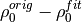
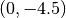

Testing and characterization¶
Testing aims at ensuring the correct execution of all program parts. This includes testing for required results, e.g. specifig sample data sets where certain result criteria have to be met (disign goals). Orthogonal to that is the characterization of the programs suite which characterizes the behaviour of the tested code.
Tests for specific functions (unit-tests) will be created for each function written. To a certain degree these tests will overlap with higher-level tests, e.g. for the fit functions which (with less comfort) provide the real logic of the whole program suite also provided by the interface (see below).
One design goal is to provide a command line interface (the interface) for the debye decomposition. Most of the higher-level testing will only commence on this interface.
When the interface is working properly the Python API will be stabilized and the (end-user) usage of this API will be tested.
Interface¶
Fit quality¶
relevant directory src/dd_single/test/Fitquality
No crash tests¶
These tests do not concern themselves with the results of certain fits. The only goal of these tests is to not crash during the exection.
The test can be executed in the CMD by the commands:
cd src/interface/tests/NoCrashTests
nosetests -s -v test_cases.py
Characterization: Synthetic spectra one-on-one¶
The test/characterization matrix consists of the following values:
- RMS, RMS_re, RMS_im
- 
Those criteria are tested for the following scenarios (based upon the synthetic specutrum described above):
Vary the number of
 from 1 to 1000 (in logarithmic spacing)
from 1 to 1000 (in logarithmic spacing)Vary
 between 1 and 10000
between 1 and 10000  (in logarithmic spacing)
(in logarithmic spacing)Vary the overall level of the chargebility values by factors of 0.01, 0.1, 10, 100, 1000 (in comparison to the initial model)
Vary the mean values of the
-peaks as follows (original ):- (0, -3), (0, -2), (0, -1)
- (-1, -4.5), (-2, -4.5), (-3, -4.5)
Multi-term Debye tests¶
The fit routines can be tested against external Cole-Cole/Debye implementations (c=1).